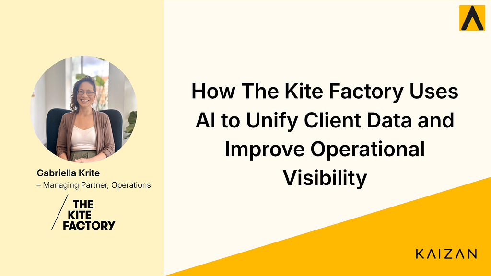

How The Kite Factory Uses AI to Unify Client Data and Improve Operational Visibility

Gabriella Kite, Managing Partner of Operations at The Kite Factory, shares how AI is helping her team unify fragmented client data, improve visibility, and create accountability across client relationships.
Watch the full conversation
Prefer to hear it in Gabriella's own words? Watch the full interview on YouTube.
The Kite Factory is an independent media agency known for delivering highly tailored client servicing.
But delivering that level of service at scale requires more than strong relationships. It requires clear, consistent visibility across every client interaction.
As the agency grew, client data became increasingly fragmented across teams, tools, and individuals.
In this case study, Gabriella Kite explains how implementing Kaizan AI has helped unify client data, reduce reliance on manual processes, and give teams a single, reliable view of every client.
Key Results
Using Kaizan, The Kite Factory’s operations teams are now able to:
- Unify client data across teams and conversations — Bring fragmented information into one central, accessible view.
- Improve visibility across every client relationship — Access real-time insights without relying on meetings or manual updates.
- Increase accountability with a single source of truth — Track what has been said, agreed, and delivered across all interactions.
The Challenge: Fragmented Data Across Teams
As The Kite Factory scaled, client information became increasingly difficult to manage.
Different teams held different pieces of context, spread across meetings, emails, and internal tools.
“You’ve got a lot of disparate data sources across different teams… you’re relying on people remembering things.”
To manage this, processes were introduced through spreadsheets, meetings, and internal updates.
However, these systems were inconsistent and dependent on individuals following them correctly.
“There are holes in that because you are relying on people remembering things.”
In a fast-paced agency environment, this created a lack of consistency and visibility across client relationships.
The Solution: Unifying Client Data into One View
By implementing Kaizan, The Kite Factory created a single, unified view of client interactions.
Instead of relying on multiple systems or internal check-ins, teams can now access all relevant client information in one place.
“It gives you that overview of all the clients you’re involved in without having to go to status meetings.”
This shift removes the need to chase updates or rely on fragmented information.
Teams can now access insights instantly, in a consistent and unbiased format.
A New Level of Visibility
One of the biggest gains has been the level and frequency of information available across the business.
“The level of information and the frequency of information is on a scale that we’ve never been able to achieve before.”
With all client conversations captured and analysed, teams can:
• quickly understand the status of any client
• stay aligned without constant meetings
• access insights across the entire client base
This creates a much clearer and more reliable view of client relationships.
Creating Accountability with a Single Source of Truth
Unifying data has also introduced a stronger level of accountability.
By capturing every conversation and agreement in one place, teams can clearly track what has been discussed and committed to.
“Having that database of the conversations you’ve had helps you remember what you’ve agreed to, but also what the client has said.”
This creates a shared, transparent record across teams and clients.
It reduces misalignment and ensures everyone is working from the same information.
Reducing Admin and Improving Efficiency
Alongside better visibility, Kaizan has reduced the manual work required to manage client information.
Meeting notes, summaries, and follow-ups are generated automatically.
“Following up after meetings… I’m able to do that much quicker.”
Insights can also be easily shared with stakeholders who were not present in meetings.
“I can just ping out the moment to them. They don’t have to read through the whole transcript.”
This allows teams to move faster while maintaining a high level of client servicing.
The Impact
Since implementing Kaizan, The Kite Factory has transformed how it manages client data and operations.
Instead of relying on fragmented systems and manual processes, teams now have a unified, real-time view of every client.
This enables them to:
• unify client data across teams and interactions
• improve visibility across all client relationships
• increase accountability with a shared source of truth
• reduce time spent on manual administrative tasks
• operate more efficiently at scale
For operations leaders, this creates a more scalable and reliable way to manage client servicing.
“The level of information and the frequency of information is on a scale that we’ve never been able to achieve before.”